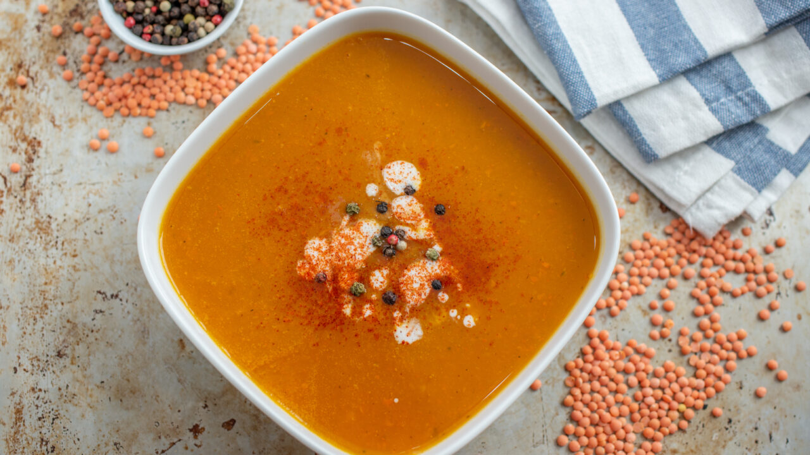

Vellutata di lenticchie rosse

Si tratta di una zuppa molto gustosa, può essere accompagnata con chips di pancetta, crostini o riso bianco.
Ricetta passata da Rahima.
Ingredienti per 4 persone
- 1/2 cipolla bianca
- 2/3 gambi di sedano
- 1/2 carote
- 1 bicchiere di lenticchie rosse
- 1/2 bicchiere di salsa di pomodoro
- Sale q.b.
Preparazione
- Preparare la cipolla, il sedano e le carote tritate.
- Soffriggere il tritato con un filo di olio d'oliva in una pentola capiente.
- Dopo qualche minuto, aggiungere le lenticchie
- Aggiugere quindi la salsa di pomodoro
- Aggiungere acqua, come minimo per coprire il tutto. Aumentare quantità a piacere.
- Aggiungere sale
- Cuocere (securquick)
- Frullare per ottenere la vellutata.